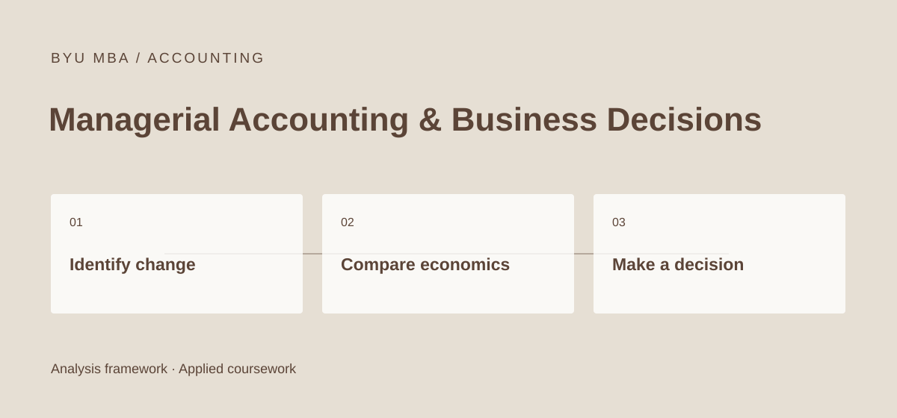

Applied coursework · 2026
Managerial Accounting & Business Decisions
A selection of managerial accounting applications focused on the decision behind the calculation: which costs change, what drives profit, and how a constrained resource affects the preferred choice.
- My role
- Individual analysis and classroom exercises
- Year
- 2026
- Work type
- Applied coursework
- Focus
- Relevant costs · Contribution margin · Capacity allocation

Relevant cost analysis
I worked through exercises that isolate the costs and revenues that change between alternatives. Comparing those differences avoids allowing unchanged costs to obscure the effect of the decision.
Capacity allocation
When machine time is limited, contribution per unit can be misleading. The relevant comparison is contribution per machine hour, subject to demand and other constraints. The classroom example below shows why the product with the larger unit contribution may not be the first priority.
Contribution per machine hour
| Classroom example | Product A | Product B |
|---|---|---|
| Contribution per unit | $1,000 | $100 |
| Machine hours per unit | 100 | 5 |
| Contribution per machine hour | $10 | $20 |
| Priority under a machine-hour constraint | After B, if capacity remains | First, subject to demand |
Classroom example. Assumes sufficient demand and that machine time is the binding constraint.
Operating risk
Other applications included break-even analysis, margin of safety, and the relationship between fixed costs and changes in operating income. These calculations help explain how sensitive a business is to a change in sales.
Business application
The output of the analysis is a recommendation with stated assumptions. For a constrained operation, that means identifying the scarce resource, comparing alternatives on the same basis, and checking whether demand or other limits change the conclusion.